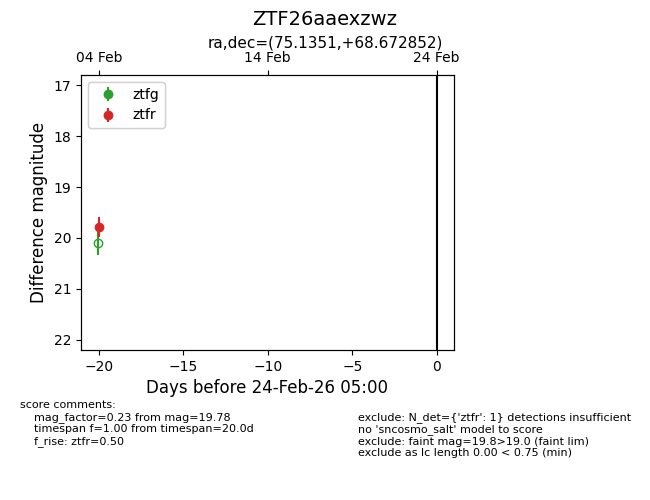
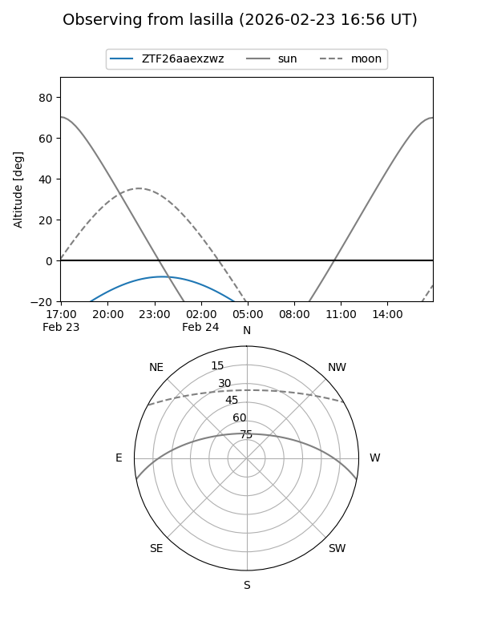
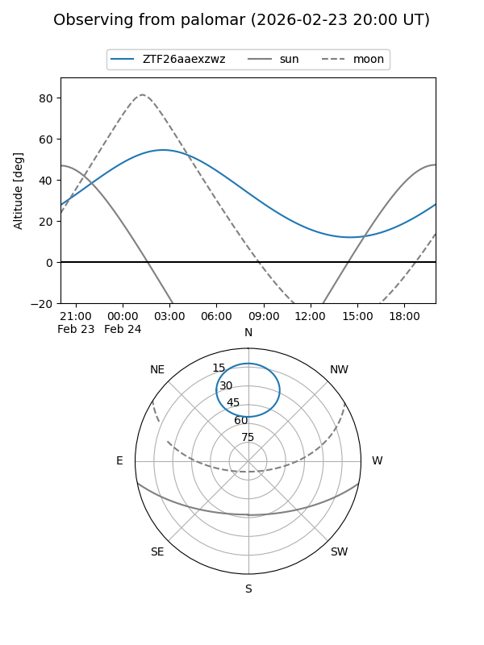

ZTF26aaexzwz
Target ZTF26aaexzwz at 2026-02-24 09:08
Aliases and brokers:
FINK: link
Lasair: link
ALeRCE: link
alt names
ZTF26aaexzwz (ztf,fink_ztf)
Coordinates:
equatorial (ra, dec) = 75.1351,+68.67285
equatorial (HMS+DMS) = 05:00:32.43,+68:40:22.27
galactic (l, b) = (142.4903,+15.91284)
Flags:
Photometry:
last ztfr=19.78
1 ztfr detections
Lightcurve

Visibility


Additional plots